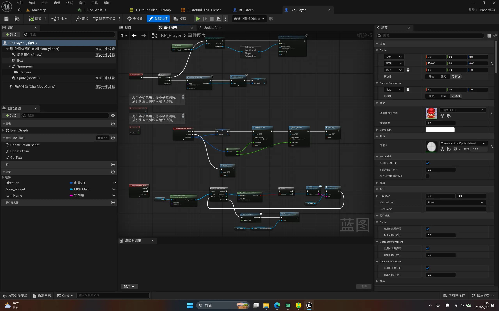
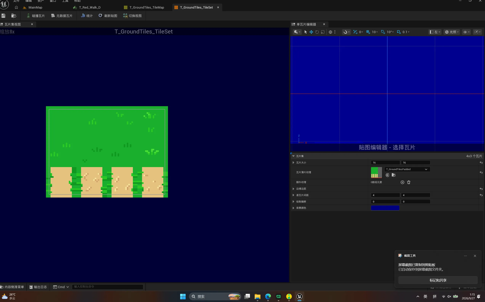
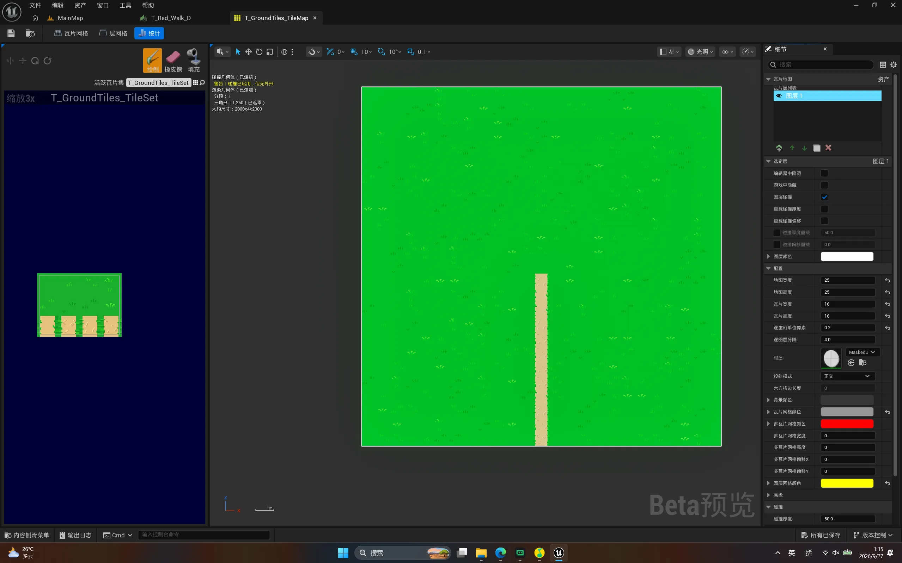
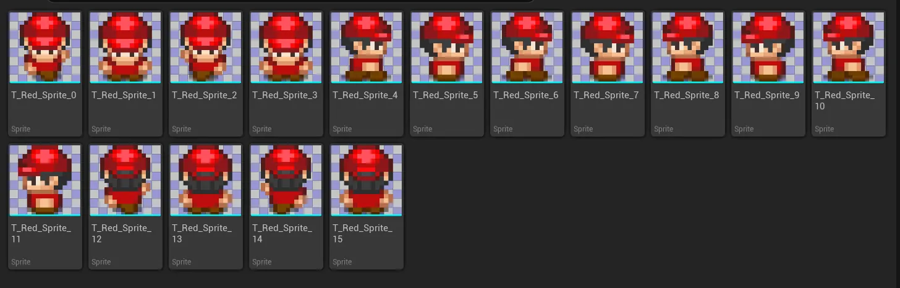
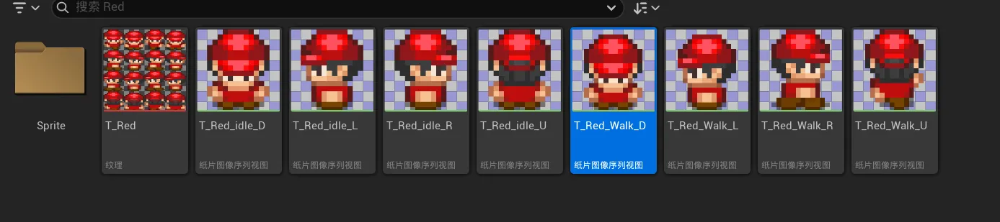

Case 07 / 08
UE 2D 游戏
前面几个用引擎做的东西全是 3D，个人偏向于2D游戏开发，Paper2D 这块一直没碰过，所以专门开了一个工程把它摸了一遍。 这个项目的目标不是做出好玩的玩法，而是搞清楚「在 UE 里搭一个 2D 关卡」这套流程到底由哪些环节组成—— 做出来的东西就是一个像素小人能在草地上来回走。
概览与技术栈
在 UE 里做 2D 和做 3D 是两条不太一样的路。3D 那边拖个网格、摆个光就能看， 2D 这边要先有一堆中间资产：一张贴图不能直接用，得先切成「瓦片」或「Sprite」， 再拼成地图或做成序列帧。这次就是把这串中间环节一个个走通， 顺带确认一件事——引擎的 2D 部分到底能省掉多少自己写的代码。
地形这块走的是官方推荐的两步流程。先把一张草地贴图交给「瓦片集」编辑器， 在上面划分瓦片区域，指定瓦片尺寸和边距；瓦片集只是一张「配方」， 本身不构成关卡。再新建「瓦片地图」资产，用瓦片画笔在画布上刷， 一张地图可以叠若干层，草地一层、土路一层，角色走在地图上。 这套东西的好处是哪怕地图铺得很大，引擎也只按可见范围拼瓦片，不用手工摆几百个精灵。
角色和道具则是另一条线：把像素贴图逐个切出来做成 Sprite 资产。 单个 Sprite 是不动的，要动就得把若干张按顺序排进「Flipbook」—— 它其实就是一段二维的逐帧动画，比如走路往下的那四张，按顺序摆好就是一秒的循环。 角色是「纸片角色」类型，身上挂了一个 Flipbook 组件负责显示当前这一帧， 另外还有碰撞盒、一个用来指示朝向的箭头、相机，以及引擎自带的角色移动组件。
动画切换没有用状态机，而是写在角色蓝图的自定义函数里： 每帧根据当前的移动方向和移动速度，决定该放待机还是行走、该放哪个朝向， 然后按方向分出几条分支，各自调用一次「设置 Flipbook」，把该换的序列帧换上去。 这种做法在只有四个方向、两种状态的时候完全够用，也最直观—— 不过我也清楚，等状态多起来（受击、攻击、跳跃），这么一长串分支就没法维护了， 那才是需要引入 PaperZD 那种结构化方案的场合。
技术栈
- 引擎
- Unreal Engine 5.7
- 2D 框架
- Paper2D：瓦片集、瓦片地图、Sprite、Flipbook 四类资产串起整个 2D 流程
- 地形
- 瓦片集负责划分贴图，瓦片地图负责用画笔拼装，草地与土路分层叠放
- 角色
- 纸片角色 + Flipbook 组件显示画面，碰撞盒、朝向箭头与相机挂在同一个蓝图上
- 动画
- 四条朝向各一套待机与行走 Flipbook，共八段序列帧，由蓝图按方向切换
- 移动
- 直接复用引擎自带的角色移动组件，平地行走、碰撞与相机跟随都不自己写
- 美术资源
- 像素素材来自公开的免费素材包，没有自制美术
截图与演示
先看一眼关卡编辑时的整体样子：视口里是绿色的草地加一条土黄小路， 中间那个红色帽子的小人就是玩家，旁边有一个NPC、树、箱子这类障碍， 上方还立了一块标牌。右侧大纲面板里能看到这个关卡有哪些东西—— 角色蓝图、几个箱子与爆炸物的蓝图、出生点、后处理体积，以及草地瓦片地图本身。

技术文档
这个工程没有单独的文档文件，所以挑五张编辑器截图，顺着「素材怎么从一张贴图变成会动的角色」这条线讲一遍。 顺序是：先看角色蓝图里动画是怎么切的，再回头从最上游的瓦片集开始，一直到序列帧拆成几段 Flipbook。

BP_Player 的事件图表，也是整个工程里唯一一段「逻辑」。
图里那几簇节点结构是一样的：先判断当前方向，再按「在走还是站着」挑一段 Flipbook 设进去。
之所以敢这么写，是因为方向只有四个、状态只有两种；
截图右侧的变量列表里那个 Direction 就是判断的依据，由移动组件算出来。




导航链接
练手工程，没有传到公开仓库，也没有打包发布，所以这里没有可以点的链接。 想看某个资产的具体参数，或者想直接要工程文件，都可以写信跟我说。
- 代码仓库
- 暂无公开仓库
- 打包发布
- 暂未发布